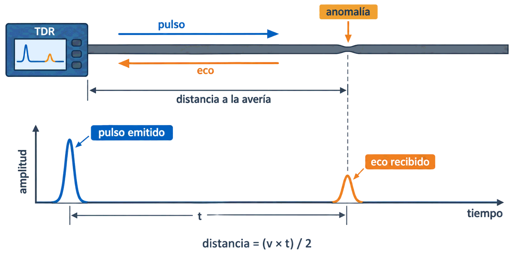
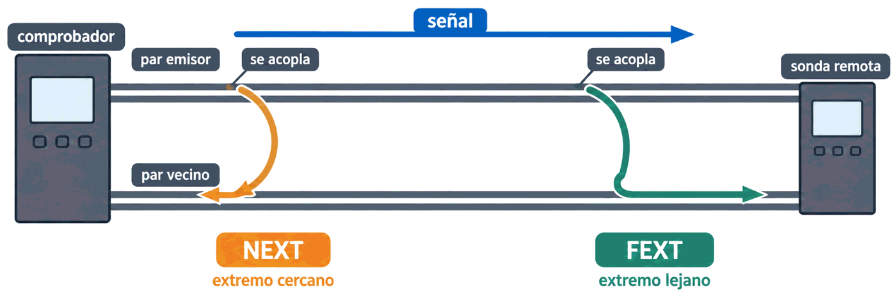

Contenido del día
1. Por qué se comprueba
El libro lo plantea en una frase que resume el trabajo de hoy. Cuando se realiza una instalación hay que comprobar que:
- El cableado utilizado es correcto.
- Se ha usado una categoría adecuada a las velocidades que se van a alcanzar.
- Las conexiones no tienen deficiencias.
- Los niveles de ruido están en sus valores mínimos.
Y añade un matiz importante: cuanto mayor sea la velocidad y la categoría para la que se va a usar el cableado, mayores serán las exigencias de los valores medidos. No existe «aprobar» a secas: se aprueba para una categoría.
Un mismo enlace puede aprobar como categoría 5e y suspender como categoría 6, sin que nadie haya tocado nada. Por eso, antes de certificar, hay que decirle al aparato qué se pretende certificar: categoría y modo —enlace permanente o canal, como viste el lunes—.
2. Los tres tipos de comprobadores
Los aparatos que miden todo esto se llaman genéricamente comprobadores de red, y los hay para par trenzado con y sin apantallar, coaxial y fibra óptica. El libro distingue tres tipos según lo que hacen:
| Tipo | Qué hace | Coste |
|---|---|---|
| 1. Comprobadores de continuidad | Solo comprueban si los cables están bien montados o tienen algún corte: si cada hilo ofrece continuidad o está cortado. Aquí entran los voltímetros y los multímetros digitales | Muy reducido |
| 2. Comprobadores de cableado | Además de la continuidad, miden diafonía, atenuación y ruido. Los más avanzados monitorizan el tráfico y dan estadísticas de uso | Medio |
| 3. TDR Reflector de Dominio del Tiempo |
Los más avanzados y caros. Detectan empalmes, nudos, radios de curvatura demasiado pronunciados y errores de impedancia, y miden longitud y tasa de propagación. Sobre todo: dicen en qué punto está la anomalía | El mayor |
El equivalente óptico se llama OTDR, Optical Time Domain Reflector. Calcula la atenuación del tramo de cable y las pérdidas en los conectores. Es el aparato que mediría de verdad aquel presupuesto óptico que calculaste en la Semana 6.
3. Cómo se mide un enlace
El procedimiento es siempre el mismo, y el libro lo describe con precisión:
- Se coloca el aparato en un extremo del cable: es el extremo cercano.
- En el otro se conecta una sonda o unidad remota, que viene con el equipo: es el extremo lejano.
- Si el equipo o la sonda llevan el mismo tipo de conector que el punto donde hay que conectarlos, se usa un latiguillo, asegurándose de que está en buenas condiciones y no va a interferir con la prueba.
EXTREMO CERCANO EXTREMO LEJANO
[comprobador] ══════ enlace bajo prueba ══════ [sonda remota]
▲ ▲
aquí se leen aquí se genera o
los resultados se recibe la señal4. La reflectometría: el TDR
Esta es la técnica más potente de diagnóstico, y el libro la explica muy bien. El problema que resuelve es concreto:
Un comprobador convencional solo dice si hay un corte o, como mucho, detecta una anomalía sin poder localizarla. Y eso es un inconveniente enorme cuando el problema obliga a desmontar toda una instalación para encontrarlo.
Una pequeña parte de la señal que circula por el cable rebota en el lugar donde hay una anomalía y vuelve al extremo de origen. Midiendo el tiempo que tarda en volver, el aparato calcula a qué distancia está esa anomalía.
Es exactamente el principio del eco: gritas, cuentas el tiempo hasta oír el rebote y deduces a qué distancia está la pared. Aquí lo que viaja es una señal eléctrica y lo que se mide son nanosegundos.

pulso ──────────▶ anomalía
[TDR] ═══════════════════════════════════╪═══════════
◀────────── eco │
a 37,2 m
tiempo del eco ──▶ distancia de la averíaLos equipos de alta precisión van más allá: no solo localizan un punto, sino que representan un parámetro a lo largo de todo el cable en una gráfica, de modo que se ve dónde empeora y cuánto.
5. Parámetros básicos
Cuando se certifica una instalación hay que medir una serie de parámetros. Estos son los cuatro más directos:
| Parámetro | Qué indica | Con qué se mide |
|---|---|---|
| Continuidad | Si existe alguna rotura que impida que llegue señal al otro extremo | Un simple comprobador de continuidad; con TDR se sabe además dónde |
| Mapeado de hilos | Si los hilos están montados correctamente o hay cortocircuitos. El libro subraya que es muy grave y de corrección prioritaria, porque impide que la información llegue | También con un comprobador sencillo |
| Resistencia | La resistencia eléctrica del cable. Un valor alto puede producir atenuación anormalmente alta, y suele venir de un defecto en los cables o en el montaje de los conectores | Comprobador de cableado |
| Longitud | La distancia entre extremos. No debe exceder la del estándar: un exceso causa retardos que hacen fallar los protocolos, y atenuación que deteriora los mensajes | Comprobador de cableado o TDR |
El libro lo apunta y es una joya de diagnóstico: medir la longitud sirve también para detectar rollos de cable sobrante escondidos dentro de los conductos. Si un tramo que en el plano son 40 m mide 78, es que alguien dejó media bobina enrollada en el falso techo.
Atenuación o pérdida por inserción
Es la pérdida de energía de la señal al atravesar el medio, y ya la conoces desde la Semana 5. Se calcula dividiendo la energía de entrada entre la de salida y se mide en decibelios. Lo nuevo es saber qué la dispara en una instalación. El libro da tres causas:
| Causa | Cómo se corrige |
|---|---|
| La longitud del enlace es excesiva | Replantear el recorrido o el punto de distribución |
| Los conectores no se han montado correctamente | Rehacer la conectorización |
| La temperatura es elevada, que influye especialmente en cables con PVC | Alejar el cable de fuentes de calor; en salas calientes, prever margen |
6. La familia de la diafonía
La diafonía ya la conoces: la corriente que circula por un hilo crea un campo electromagnético que interfiere con el hilo de al lado. El libro usa una imagen muy reconocible —oír otra conversación de fondo en una llamada de teléfono fijo— y recuerda la regla de siempre: cuanto mayor sea el trenzado, menor será la diafonía.
- Que el cable no se ha mantenido trenzado al máximo en los conectores.
- Que la pantalla protectora se ha deteriorado o es de mala calidad.
Las dos apuntan al montaje, que es justo lo que viste en la Semana 6 y el martes.
Para medirla no basta un solo número. Hay cuatro parámetros de esta familia:
| Parámetro | Qué mide | ¿Alto o bajo? |
|---|---|---|
| NEXT diafonía del extremo cercano |
La señal que se acopla en otro cable y vuelve en sentido contrario al de la señal original. Se mide en el extremo cercano | Alto: cuanto más alto, menos diafonía |
| FEXT diafonía del extremo lejano |
Lo mismo, pero con la señal acoplada que va en el mismo sentido y llega al otro extremo | Alto también |
| ELFEXT igualdad de nivel de FEXT |
No es una medida, es un cálculo: la diferencia entre la atenuación y el FEXT. Se inyecta señal en un par y se mide otro, así que en un cable de 4 pares salen 12 medidas | Un valor bajo indica buena instalación |
| ACR relación atenuación-diafonía |
La diferencia entre NEXT y atenuación. Dice si la señal es más fuerte que el ruido de fondo | Lo más alto posible |
NEXT, FEXT y ACR son márgenes: miden cuánto se diferencia la señal buena del ruido, así que cuanto más altos, mejor. Un NEXT de 45 dB es mejor que uno de 35.
ELFEXT es la excepción que el libro señala: un valor bajo indica una buena instalación del cableado.
Y ojo con la trampa de siempre: la atenuación no es un margen, es una pérdida. Ahí cuanto más bajo, mejor.
Un ACR malo tiene dos posibles culpables, y el libro los nombra: una atenuación excesiva o un NEXT excesivo. Es coherente, porque el ACR es la resta de los dos.

par emisor ════════ señal ════════════════════▶
╲ se acopla ╲ se acopla
par vecino ◀═══╝ NEXT ╚═══▶ FEXT
(vuelve al origen) (llega al extremo lejano)
▲ ▲
comprobador sonda remota7. Pérdida por retorno
El último parámetro, y el que delata el trabajo del martes:
Se produce por la diferencia de impedancia a lo largo de una línea. Esa diferencia puede aparecer varias veces y produce un efecto de rebote de parte de la señal, que vuelve al origen. Se mide en decibelios y su nivel aceptable depende del medio.
Y el libro dice exactamente de dónde sale cuando es excesiva:
- Las longitudes de destrenzado de los cables en los conectores son muy altas.
- No se ha mantenido hasta el extremo la pantalla protectora.
Fíjate en que el destrenzado excesivo aparece como causa dos veces: en la diafonía y en la pérdida por retorno. Es, con diferencia, el error de montaje que más caro sale en una certificación, y es justo el que el libro señalaba en la Semana 6 como «el que se comete más a menudo».
8. Cómo se lee un informe
Un informe de certificación tiene siempre la misma estructura:
| Sección | Qué contiene |
|---|---|
| Cabecera | Identificador del enlace, fecha, operador, modelo del certificador y norma y categoría contra la que se mide |
| Modo | Enlace permanente o canal: cambia los límites |
| Veredicto global | PASS o FAIL, a veces con un asterisco: PASS* significa que aprueba dentro del margen de incertidumbre del aparato |
| Tabla de parámetros | Para cada uno: valor medido, límite y margen, casi siempre indicando el peor par |
El margen es la distancia entre lo medido y el límite. Si es positivo, cumple. Y no da igual cuánto: un enlace que aprueba con 0,3 dB de margen está al borde, y cualquier cambio —una reconexión, calor en verano, el envejecimiento— puede tirarlo. Un margen sano ronda varios decibelios.
Y lo más útil de todo: la relación entre qué parámetro falla y qué se hizo mal.
| Parámetro que falla | Causa más probable | Qué hacer |
|---|---|---|
| Mapeado de hilos | Conector mal montado, pares cruzados o par partido | Rehacer los conectores |
| Longitud | Recorrido excesivo, o un rollo de cable sobrante escondido | Medir con TDR y replantear o retirar la reserva |
| Atenuación | Longitud excesiva, conectores mal montados o temperatura alta | Las tres del libro, en ese orden |
| NEXT | Destrenzado excesivo en los conectores o pantalla deteriorada | Rehacer las terminaciones cuidando el destrenzado |
| ACR | Atenuación excesiva o NEXT excesivo: es la resta de ambos | Mirar cuál de los dos está mal y corregir ese |
| Pérdida por retorno | Destrenzado alto, pantalla no mantenida hasta el extremo, curvas cerradas o cable aplastado | Revisar terminaciones y recorrido; el TDR localiza el punto |
9. Resumen y errores frecuentes
- Se comprueba que el cableado es correcto, la categoría adecuada, las conexiones sin deficiencias y el ruido mínimo. Más categoría, más exigencia.
- Tres comprobadores: continuidad · cableado (añade diafonía, atenuación y ruido) · TDR (añade localización). En fibra, OTDR.
- Se mide con el aparato en el extremo cercano y la sonda en el lejano.
- La reflectometría mide el tiempo que tarda el eco en volver y con él calcula a qué distancia está la avería.
- Parámetros básicos: continuidad, mapeado, resistencia y longitud. La longitud delata además rollos escondidos.
- Atenuación: por longitud excesiva, conectores mal montados o temperatura.
- NEXT, FEXT y ACR, cuanto más altos mejor; ELFEXT, bajo. En un cable de 4 pares, ELFEXT son 12 medidas.
- Pérdida por retorno: destrenzado alto o pantalla no mantenida hasta el extremo.
- En un informe, lo que se mira es el margen, no solo el PASS.
| Se dice… | …pero en realidad |
|---|---|
| «El cable aprueba la certificación» | Aprueba para una categoría y un modo concretos. Cambia la categoría y puede suspender |
| «Con el comprobador de 20 euros ya está certificado» | Ese solo mira continuidad. Certificar exige medir diafonía y atenuación |
| «NEXT alto es malo» | Al revés: NEXT alto significa poca diafonía. Es un margen, no una pérdida |
| «ELFEXT cuanto más alto mejor, como los demás» | Es la excepción: un valor bajo indica buena instalación |
| «Si el informe dice PASS, ya está» | Hay que mirar el margen: aprobar por 0,3 dB es aprobar en precario |
| «Un comprobador normal me dice dónde está el fallo» | Solo el TDR localiza: los demás dicen que algo pasa, no dónde |
| «La longitud solo sirve para ver si pasa de 90 m» | También delata rollos de cable escondidos en los conductos |
10. Repaso con flashcards
Piensa la respuesta antes de girar la tarjeta.
Quiz del día
16 preguntas · 23 minutos · Contesta sin volver a la teoría
El cronómetro no corre mientras lees: arranca al llegar aquí, al pulsar «Empezar quiz» o al marcar tu primera respuesta.
Resultados
Respuestas correctas: 0 / 0
Respuestas incorrectas: 0
Tres informes de certificación: uno aprueba y dos suspenden. Hay que leer los números, dar el veredicto y deducir qué se hizo mal durante la instalación.
→ Ir al laboratorio del Día 3 (72 min)
Etiquetado y documentación: lo que convierte una instalación correcta en una instalación mantenible, y el dosier que se entrega al cliente.
Tarea de calentamiento (5 min): mira si los cables de tu casa o tu centro tienen etiquetas. ¿Sabrías decir a dónde va cada uno sin seguirlo con la mano?